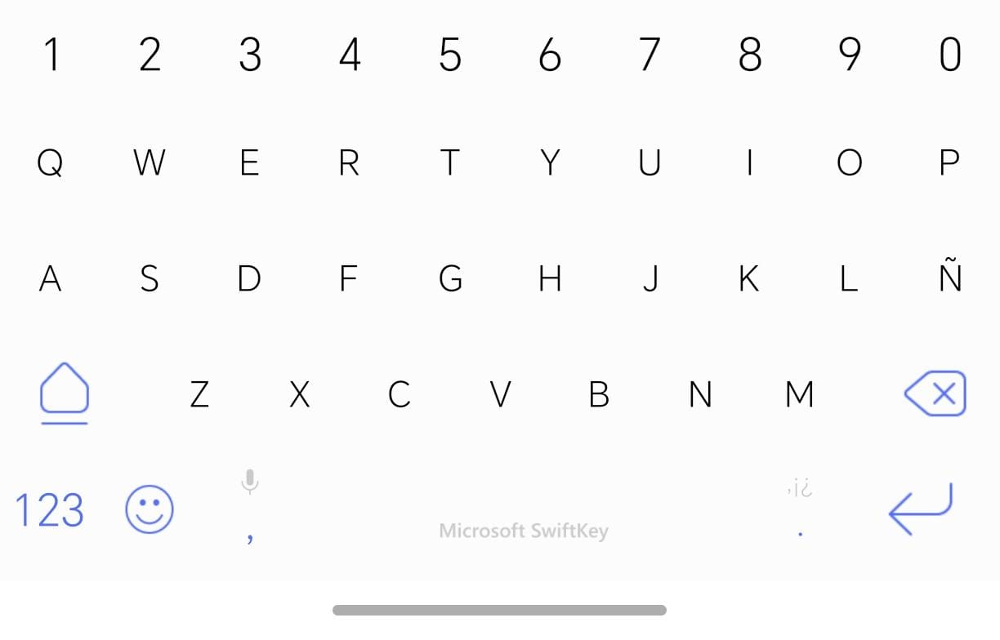

¿Qué es el teclado?
El teclado aparece en la pantalla cuando necesita escribir.
Se usa para enviar mensajes, escribir nombres o buscar información.

Partes del Teclado
Letras
Sirven para escribir palabras y mensajes.
Espacio
Se usa para separar palabras.
Borrar
Elimina letras si se equivoca al escribir.
Cómo usar el teclado
1. Toque una caja de texto
El teclado aparecerá automáticamente en la pantalla.
2. Toque las letras
Cada toque escribe una letra en el mensaje.
3. Use espacio o borrar
Puede separar palabras o corregir errores.